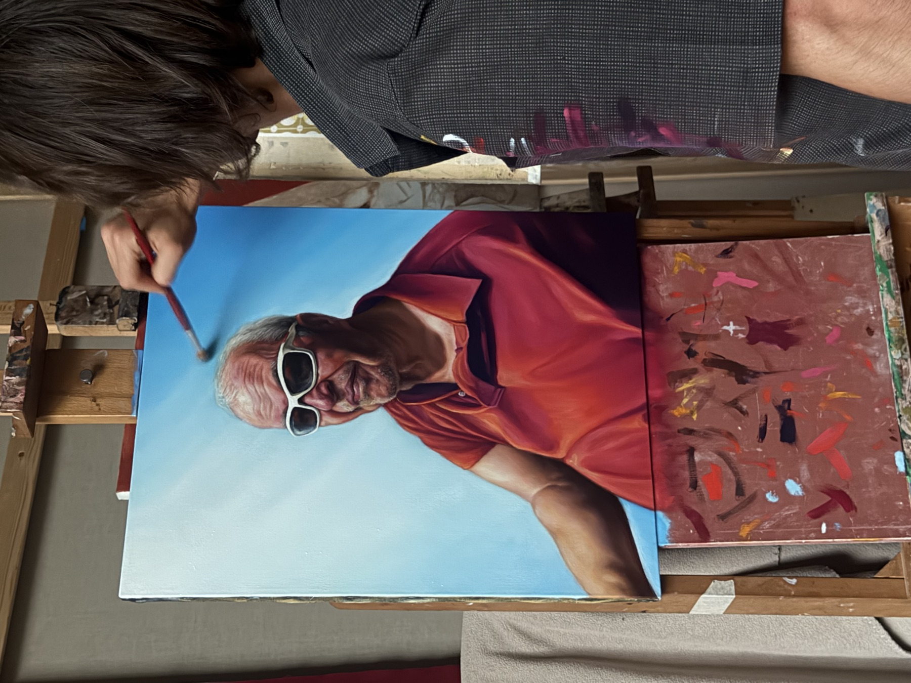

Alessandro Pizzuti (n. 1997, Macerata) è un artista visivo che opera attraverso la pittura, la pittura murale e la scultura. Vive e lavora a Firenze. Dopo il diploma in Architettura al Liceo Artistico "G. Cantalamessa" di Macerata, nel 2017 si trasferisce a Milano, dove studia Product Design all'Accademia di Belle Arti di Brera, diplomandosi nel 2021. Dal 2018, in parallelo agli studi, inizia a dedicarsi alla pittura figurativa da autodidatta, approfondendo la tradizione rinascimentale e manierista e mettendola in dialogo con le avanguardie del Novecento e la cultura visiva contemporanea.
La sua pratica è caratterizzata dalla continua sperimentazione di tecniche e linguaggi, con la pittura a olio come medium principale, affiancata da tecniche miste, disegno e scultura. La ricerca si concentra sul rapporto tra realtà e immaginazione, sulla percezione e sulla trasformazione — un'altra componente del processo riguarda l'osservazione della società contemporanea, attraverso oggetti e momenti di vita quotidiana legati al consumo e ai modelli di produzione. Dal 2021 sviluppa parallelamente la pittura murale, realizzando interventi pubblici e privati, tra cui un murale commissionato dalla Commissione Europea — Rappresentanza in Italia, a Sestri Levante.
2025 — iperSupermarkette, Artcity Bologna, a cura di Mariano Franzetti, supervisione Nicolas Ballario. Palazzo Hercolani-Bonora, Bologna
2025 — Conflicting Feeling, a cura di Domenico De Chirico. Galleria Contemporary Clauster, Roma
2025 — Cripta Galassia, a cura di Caterina Angelucci. Grottammare (AP)
2025 — Vanitas — From the Deceit of Time to the Reflection of Beyond, a cura di Maurizio Vanni. Ulsan, Corea del Sud
2024 — Supermarkette, con Maurizio Tentella, a cura di Mariano Franzetti. Galleria Lampo, Ex Scalo Farini, Milano
2024 — Murale commissionato dalla Commissione Europea Italiana. Sestri Levante (Liguria)
2023 — Murale commissionato dal Comune di Montegranaro
2023 — Targa commemorativa "Pasqualina Pezzola", commissionata dal Comune di Civitanova Marche
2021 — Quattro murales commissionati dal Comune di Civitanova Marche, con il Museo di Arte Urbana "Vedo a Colori"
2021 — Diploma in Design del Prodotto, Accademia di Belle Arti di Brera
2022–24 — Los Angeles, assistente per la mostra di Fidia Falaschetti "Loss Angeles"
2017–20 — Milano, assistente dell'artista Mariano Franzetti, pittore, scultore e art director